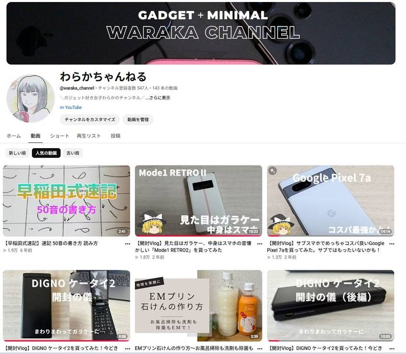
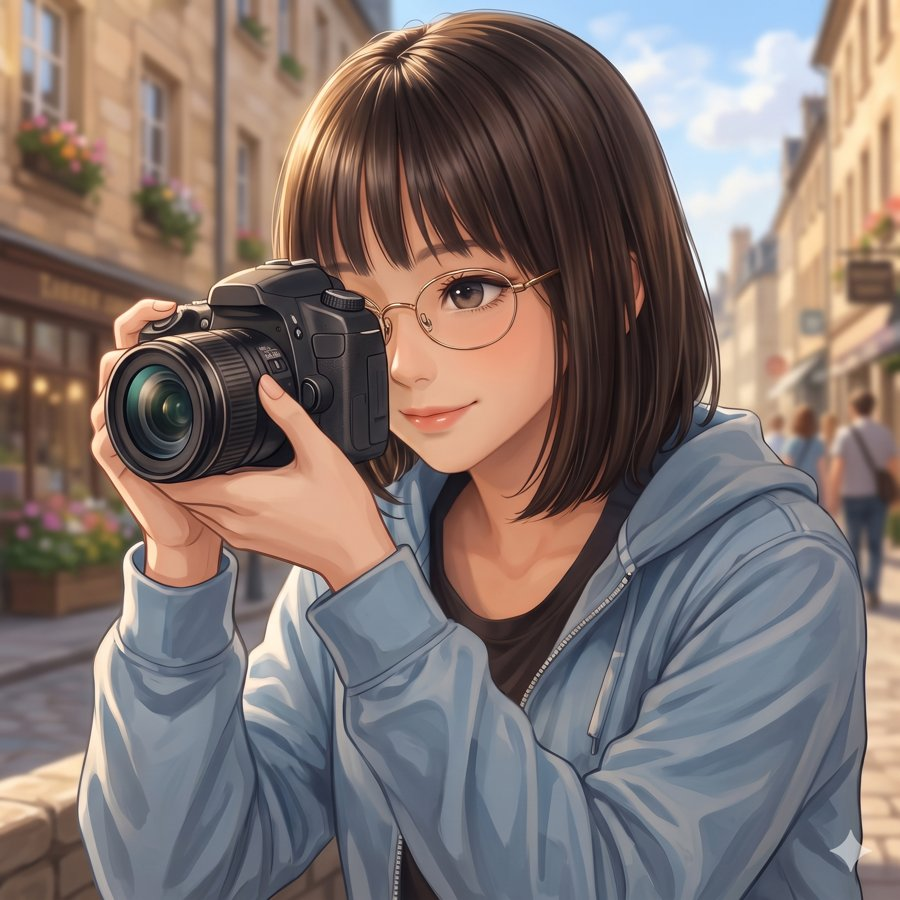
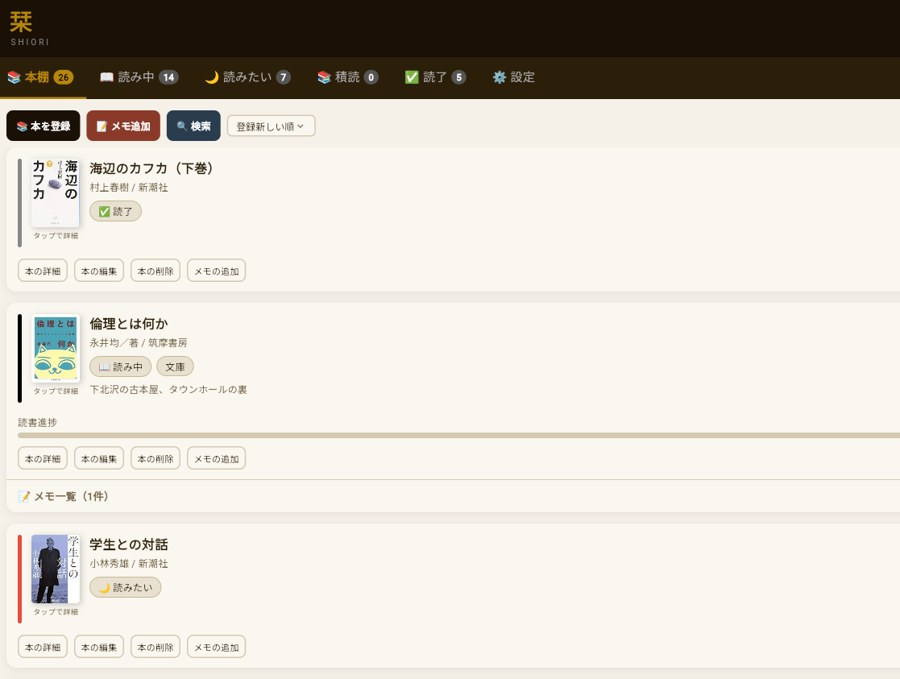
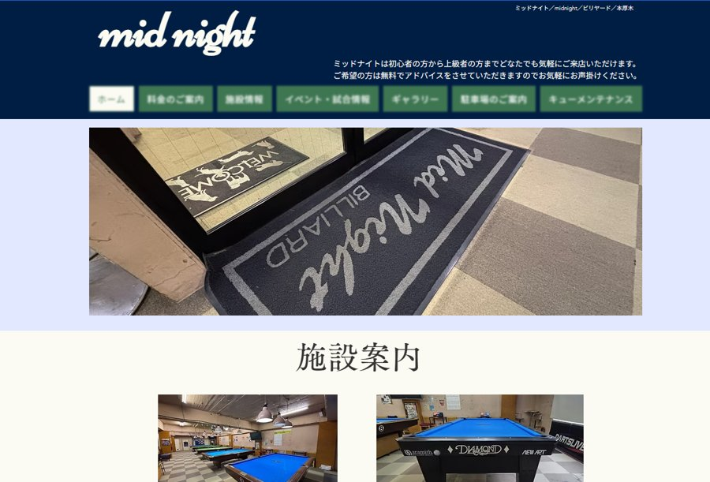

山口笑加
Emika Yamaguchi
写真歴10年以上。舞台撮影を中心に、ライブ・街・祭り・動物などを撮影しています。
劇団鳥獣戯画の舞台を2012年より約12年間担当。読売写真クラブにて最優秀賞・入選など複数受賞。PIXTAでも写真を販売中です。
SELECTED WORKS
Gallery
01 — 21
写真を選択すると大きく表示されます。
YOUTUBE
YouTube
OTHER ACTIVITIES
他の活動

